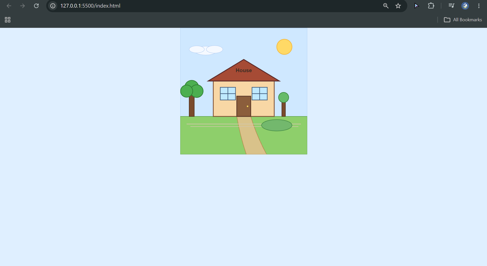
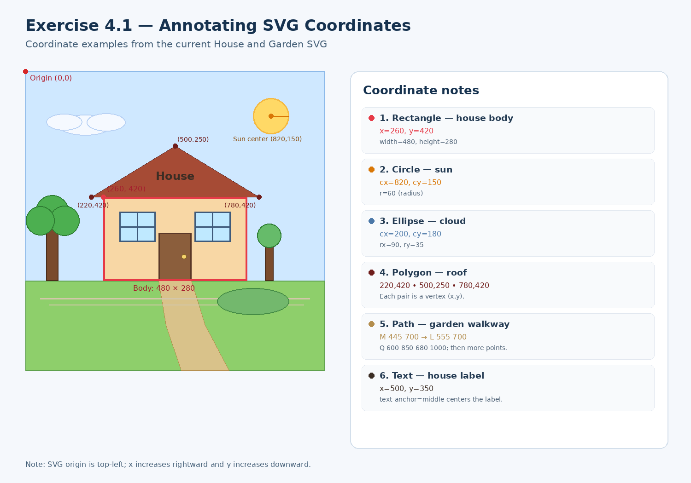
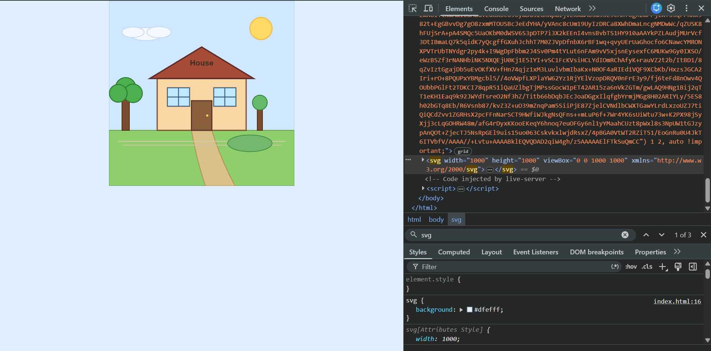

This screenshot shows the original house and garden drawing created using SVG elements.

The annotated image identifies examples of SVG shapes and explains how their coordinates correspond to the drawing. The SVG origin is at the top-left corner. The x-coordinate increases to the right, while the y-coordinate increases downward.

This screenshot shows the SVG elements in the browser's Developer Tools, including the structure of the SVG container and its child elements.
